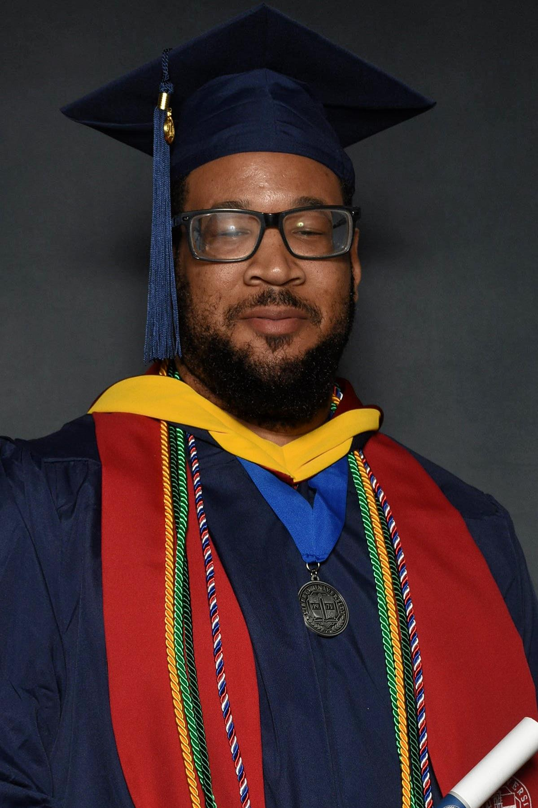

Quentin Irvin

Summary
Up and coming Fullstack Web Developer looking to create and maintain your webpages and applications.
Education
- Masters of Science, Cybersecurity - Liberty University (Sep 2022 - Oct 2023)
- 3.94 GPA: Graduate with Distinction
- Sigma Beta Delta Inductee
- Bachelors of Science, Cybersecurity - Full Sail University
- Assoicates of Science, Information Technology - Full Sail University
Work Experience
Network Technician - Stryker
Aug 2022 - Present
- Worked with sales rep to complete upgrades or new installs at customer sites.
- Set up hardware and software in optimal configurations to meet network performance requirements.
- Performed necessary maintenance to support network availability.
- Improved network reliability by troubleshooting and resolving hardware and software issues.
- Supported project planning team to promptly address hardware and software problems and network emergencies.
- Maintained thorough understanding of local area and wide area networking and components.
- Provided exceptional customer service by promptly addressing user concerns and technical issues.
- Collaborated with team members for successful implementation of large-scale network projects.
- Troubleshot hardware and software to determine and rectify network problems.
- Logged, resolved and escalated on-site and off-site issues.
- implementation, add-on, maintenance and support of voice, data, VoIP, and CTI applications (i.e. Cisco Codecs.)
Field Service Technician - Stryker
Aug 2021 - Aug 2023
- Used various tools and test equipment such as torque wrenches, multimeters, and computer-based software to effect repairs and maintenance on equipment within assigned region.
- Improved equipment uptime by conducting regular preventive maintenance and timely repairs.
- Optimized equipment functionality by performing routine calibration and adjustments to meet manufacturer specifications.
- Discussed and recommended service options with customers and explained costs involved.
- Strengthened relationships with customers by understanding their needs and delivering tailored solutions that exceeded expectations.
- Tended to machines, troubleshot malfunctions and completed basic repairs to keep equipment fully functional and well-maintained.
- Completed partial or full dismantling of equipment to quickly repair or replace defective components and restore functionality.
- Worked with sales rep to complete upgrades or new installs at customer sites.
Equipment Maintenance Technician III - Tesla
Nov 2020 - August 2021
- Maintained and serviced two DCM-6000 casting machines and all associated equipment.
- Reviewed technical documentation to complete equipment maintenance and repair.
- Determined new techniques to streamline maintenance processes to increase workflow.
- Managed team of 10 employees, overseeing training and professional growth of employees.
- Ran network cable and worked with automation team to ensure IT devices connected to network were fully functional.
- Implemented cost-saving measures through the optimization of spare parts inventory management practices.
Senior Maintenance Technician - Plenty Unlimited Inc
Feb 2020 - Nov 2020
- Implemented and performed preventative and corrective maintenance procedures for custom-built proprietary harvesting and transplanting equipment, plant nutrient supply systems (pumps, motors, piping, and storage), and conveyance system.
- Maintained inventory of purchased and stocked repair/spare parts, ordered parts as necessary, acquired quotes as required utilizing software such as NetSuite and Arena.
- Partnered with Engineering and Safety teams in planning, ordering, installing, and training for new equipment.
- Established and documented protocols for preventive maintenance procedures, decreasing equipment issues and reducing downtime by 35%.
- Maximized production uptime through diligent monitoring of critical systems and prompt response to malfunctions.
- Performed preventive maintenance and repairs on various types of equipment.
Field Maintenance Technician - Bloom Energy
Aug 2019 - Feb 2020
- Responsible for troubleshooting and correcting networking and communication incidents for all energy servers, i.e., Controller Area Network and HMI communcations.
- Responsible for maintaining solid oxide fuel cells and all associated equipment, including electrical and mechanical components.
- Troubleshot and repaired/replaced electronic/electrical components up to 480VAC, such as DC to DC converters, Inverters, Rectifiers, and VFDs.
Equipment Maintenance Technician - Tesla
October 2018 - Aug 2019
- Responsible for maintaining six stamping press lines and all associated equipment, including hydraulic, pneumatic, and electrical systems.
- Coordinated with engineering teams to implement preventative maintenance procedures, new processes, and updates to equipment.
- Maintained metal scrap conveyor systems, and 2D/3D lasers systems.
Maintenance Technician - Schlumberger Technology Corp
Jan 2018 - Oct 2018
- Responsible for performing preventative and corrective maintenance on Oilfield Service Equipment, including Diesel Engines, Peterbilt Tractors, Trailers, and all associated fuel, hydraulic, and oil systems.
- Minimized production delays, responding swiftly to emergency breakdowns or unexpected malfunctions.
- Collaborated with team members to complete larger repair projects efficiently.
- Completed daily, weekly, and monthly checklists on building equipment to maintain records of scheduled maintenance procedures.
- Performed electrical and mechanical repairs of production equipment to minimize downtime.
Gas Turbine System Technician - United States Navy
Jun 2010 - Dec 2017
- Responsible for preventive and corrective maintenance of gas turbine engines, generators, and all associated equipment.
- Supervised and trained 50 personnel on correct procedures for maintaining and repairing shipboard engine and fuel service systems.
- Responsible for ensuring that personnel assigned to command are trained on proper protocols and procedures related to Quality Assurance and Quality Control.
- Managed 30 personnel resulting in 100% availability of all equipment.
- Mentored new service members on operating equipment and safety and developed training manual for reference.
- Verified cleanliness of hangar and assigned spaces and initiated material requests for required tasks
- Increased equipment lifespan through meticulous preventive maintenance routines, reducing need for costly replacements.
- Followed safety protocols and procedures to maintain safe working environment.
- Conducted tests on gas turbine systems, analyzing results to verify proper functionality.
Skills
- Hardware and software installation
- Network Connectivity
- Network Administration
- VoIP Systems
- Wireless Networking
- Switches and routers
- Network Security
- Call Routing
- Performance Testing
- Professionalism
- Excellent Communication
- User Training
Awards and Certifications
- Certified in Cybersecurity - ISC2
Links
Contact Info
LinkedIn Profile